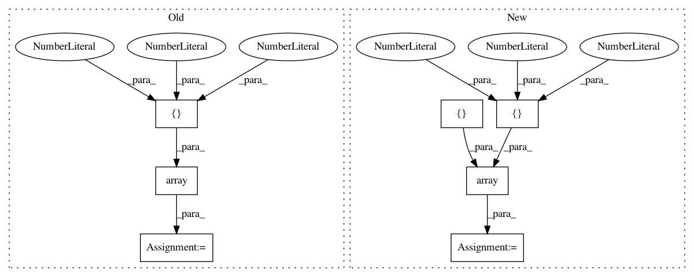

8318aa79c4898d4bfa3c8b5342d726afd4da7d54,dipy/tracking/tests/test_utils.py,,_target,#,240
Before Change
assert_raises(ValueError, list, new)
// Test smaller voxels
random_array = np.array([[0.2862315, 0.44142904, 0.19837613, 0.422711],
[0.7434331, 0.55335599, 0.18633461, 0.427429],
[0.1465992, 0.84593179, 0.79033433, 0.576709],
[0.6525159, 0.96735703, 0.69833409, 0.117800]])
affine = random_array - .5
affine[3] = [0, 0, 0, 1]
streamlines = list(move_streamlines(streamlines, affine))
new = list(target_f(streamlines, mask, affine=affine))
assert_equal(len(new), 1)
After Change
assert_raises(ValueError, list, new)
// Test smaller voxels
affine = np.array([[.3, 0, 0, 0],
[0, .2, 0, 0],
[0, 0, .4, 0],
[0, 0, 0, 1]])
streamlines = list(move_streamlines(streamlines, affine))
new = list(target_f(streamlines, mask, affine=affine))
assert_equal(len(new), 1)
assert_true(new[0] is streamlines[0])
In pattern: SUPERPATTERN
Frequency: 3
Non-data size: 7
Instances
Project Name: nipy/dipy
Commit Name: 8318aa79c4898d4bfa3c8b5342d726afd4da7d54
Time: 2018-12-10
Author: skab12@gmail.com
File Name: dipy/tracking/tests/test_utils.py
Class Name:
Method Name: _target
Project Name: scikit-optimize/scikit-optimize
Commit Name: 79ae9a58f8b21829fa53c7403f75dfe77f012115
Time: 2020-09-29
Author: proy@bongfish.com
File Name: skopt/tests/test_sampler.py
Class Name:
Method Name: test_halton
Project Name: nipy/dipy
Commit Name: d5be66f320d8e09165ad1f9b44ca5ab2c9586ad2
Time: 2019-11-30
Author: garyfallidis@gmail.com
File Name: dipy/workflows/tests/test_viz.py
Class Name:
Method Name: test_horizon_flow